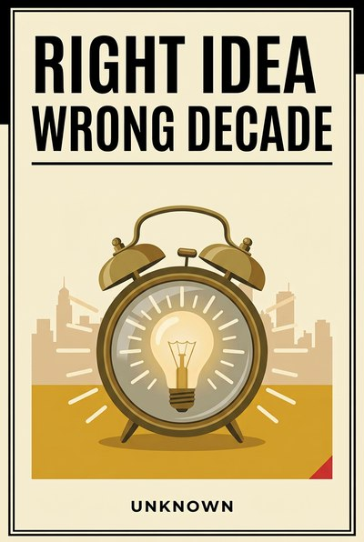
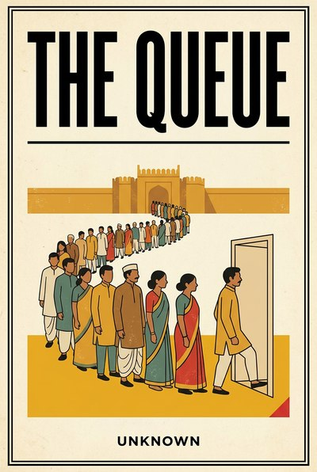

Library › Authors › Anonymous
The anonymous classics
30 books with no author to thank - folk wisdom, scripture, verse and voice from teachers whose names history did not keep. The lessons kept themselves.
30 BOOKS · ALL FREE Cricket's Balance SheetUnknown · 2026The business of cricket decoded: media rights, player auctions, sponsorship math and the leverage traps, a man11 min · 10 lessons · free summary
Cricket's Balance SheetUnknown · 2026The business of cricket decoded: media rights, player auctions, sponsorship math and the leverage traps, a man11 min · 10 lessons · free summary Letters to My Younger SelfUnknown · 2026Somewhere between the person you were and the person you are, there is a conversation that never happened. Thi11 min · 11 lessons · free summary
Letters to My Younger SelfUnknown · 2026Somewhere between the person you were and the person you are, there is a conversation that never happened. Thi11 min · 11 lessons · free summary Mandi MathUnknown · 2026Ten lessons in money from India's markets: price discovery by conversation, credit by community, and the daily11 min · 10 lessons · free summary
Mandi MathUnknown · 2026Ten lessons in money from India's markets: price discovery by conversation, credit by community, and the daily11 min · 10 lessons · free summary Nobody Is Thinking About YouUnknown · 2026You rehearse the message four times before sending. You replay the meeting comment for three days. Here is the10 min · 10 lessons · free summary
Nobody Is Thinking About YouUnknown · 2026You rehearse the message four times before sending. You replay the meeting comment for three days. Here is the10 min · 10 lessons · free summary
Right Idea, Wrong DecadeUnknown · 2026A field guide to timing: why great ideas die ahead of their decade, how fast followers inherit the market, and12 min · 11 lessons · free summary The Apology EngineUnknown · 2026Everyone makes mistakes. Almost nobody repairs them well: and the difference between a relationship that survi10 min · 10 lessons · free summary
The Apology EngineUnknown · 2026Everyone makes mistakes. Almost nobody repairs them well: and the difference between a relationship that survi10 min · 10 lessons · free summary The Art of Letting GoUnknown · 2026Everyone talks about holding on. Almost nobody teaches the other skill, the one with the bigger returns: putti11 min · 11 lessons · free summary
The Art of Letting GoUnknown · 2026Everyone talks about holding on. Almost nobody teaches the other skill, the one with the bigger returns: putti11 min · 11 lessons · free summary The Bootstrapped RebellionUnknown · 2026Venture capital is one fuel. This book is about the other one: customers, cash flow and compounding, the boots10 min · 10 lessons · free summary
The Bootstrapped RebellionUnknown · 2026Venture capital is one fuel. This book is about the other one: customers, cash flow and compounding, the boots10 min · 10 lessons · free summary The Chai Stall CEOUnknown · 2026What the street-level Indian entrepreneur knows about costs, cash, loyalty and growth that boardrooms keep rel11 min · 10 lessons · free summary
The Chai Stall CEOUnknown · 2026What the street-level Indian entrepreneur knows about costs, cash, loyalty and growth that boardrooms keep rel11 min · 10 lessons · free summary The Comparison TaxUnknown · 2026Comparison feels like information. It is actually a tax: on focus, on joy, and on the decade you were given to10 min · 10 lessons · free summary
The Comparison TaxUnknown · 2026Comparison feels like information. It is actually a tax: on focus, on joy, and on the decade you were given to10 min · 10 lessons · free summary The Decision RoomUnknown · 2026One bad decision rarely sinks a company. It is the room that made it: the nods, the silence, the boss's face: 10 min · 10 lessons · free summary
The Decision RoomUnknown · 2026One bad decision rarely sinks a company. It is the room that made it: the nods, the silence, the boss's face: 10 min · 10 lessons · free summary The Delegation LadderUnknown · 2026Most leaders do not delegate badly on purpose. They delegate badly because nobody taught them the ladder: and 10 min · 10 lessons · free summary
The Delegation LadderUnknown · 2026Most leaders do not delegate badly on purpose. They delegate badly because nobody taught them the ladder: and 10 min · 10 lessons · free summary The Exit That Almost Wasn'tUnknown · 2026Everyone plans the building. Almost nobody plans the leaving: and the difference between a great exit and a gu10 min · 10 lessons · free summary
The Exit That Almost Wasn'tUnknown · 2026Everyone plans the building. Almost nobody plans the leaving: and the difference between a great exit and a gu10 min · 10 lessons · free summary The Franchise LieUnknown · 2026Franchising is sold as buying a working machine. Sometimes it is. Often you are the machine, and the machine h10 min · 10 lessons · free summary
The Franchise LieUnknown · 2026Franchising is sold as buying a working machine. Sometimes it is. Often you are the machine, and the machine h10 min · 10 lessons · free summary The Last Mile LieUnknown · 2026Every failed delivery startup died of the same arithmetic: the last mile is where the money goes to die: and t10 min · 10 lessons · free summary
The Last Mile LieUnknown · 2026Every failed delivery startup died of the same arithmetic: the last mile is where the money goes to die: and t10 min · 10 lessons · free summary The Moat MapUnknown · 2026Revenue is rented. Moats are owned. This book maps the real ones: brand, switching cost, network, cost, regula10 min · 10 lessons · free summary
The Moat MapUnknown · 2026Revenue is rented. Moats are owned. This book maps the real ones: brand, switching cost, network, cost, regula10 min · 10 lessons · free summary The Monsoon PortfolioUnknown · 2026Buffer stocks, flexible loans, natural hedges and pre-written pivots: the quiet architecture of resilience, ta11 min · 10 lessons · free summary
The Monsoon PortfolioUnknown · 2026Buffer stocks, flexible loans, natural hedges and pre-written pivots: the quiet architecture of resilience, ta11 min · 10 lessons · free summary The Price Is the ProductUnknown · 2026Founders spend months on the product and one afternoon on its price: then wonder why the margin died. Pricing 10 min · 10 lessons · free summary
The Price Is the ProductUnknown · 2026Founders spend months on the product and one afternoon on its price: then wonder why the margin died. Pricing 10 min · 10 lessons · free summary
The QueueUnknown · 2026From license-raj counters to modern gatekeepers, the anatomy of queues: who builds them, who profits from them11 min · 10 lessons · free summary The Quiet GiantUnknown · 2026The anatomy of institutional decline: how giants drift, filter truth, defend sunk empires and miss their own f12 min · 11 lessons · free summary
The Quiet GiantUnknown · 2026The anatomy of institutional decline: how giants drift, filter truth, defend sunk empires and miss their own f12 min · 11 lessons · free summary The Quiet LeaderUnknown · 2026The loudest voice in the room is rarely the reason the room wins. This book is about the other kind of leader:10 min · 10 lessons · free summary
The Quiet LeaderUnknown · 2026The loudest voice in the room is rarely the reason the room wins. This book is about the other kind of leader:10 min · 10 lessons · free summary The Rented KingdomUnknown · 2026Platform dependence decoded: reach, algorithms, terms of service and fee stacks, and the discipline of buildin12 min · 11 lessons · free summary
The Rented KingdomUnknown · 2026Platform dependence decoded: reach, algorithms, terms of service and fee stacks, and the discipline of buildin12 min · 11 lessons · free summary The Scrolled MindUnknown · 2026Your attention is the product being sold, your focus is the resource being mined, and nobody signed up for the10 min · 10 lessons · free summary
The Scrolled MindUnknown · 2026Your attention is the product being sold, your focus is the resource being mined, and nobody signed up for the10 min · 10 lessons · free summary The Second Life of Broken ThingsUnknown · 2026There is a Japanese craft where broken pottery is repaired with gold, and the mended seams become the most val10 min · 10 lessons · free summary
The Second Life of Broken ThingsUnknown · 2026There is a Japanese craft where broken pottery is repaired with gold, and the mended seams become the most val10 min · 10 lessons · free summary The Successor's DilemmaUnknown · 2026Building the empire takes a decade. Handing it over takes honesty most leaders never find: and the graveyard o10 min · 10 lessons · free summary
The Successor's DilemmaUnknown · 2026Building the empire takes a decade. Handing it over takes honesty most leaders never find: and the graveyard o10 min · 10 lessons · free summary The Tiffin CodeUnknown · 2026The Mumbai dabbawala network decoded as management doctrine: simple codes, frontline ownership and an error ra11 min · 10 lessons · free summary
The Tiffin CodeUnknown · 2026The Mumbai dabbawala network decoded as management doctrine: simple codes, frontline ownership and an error ra11 min · 10 lessons · free summary The Turnaround CaptainUnknown · 2026Anyone can steer in fair weather. This book is for the day you are handed the wheel in a storm: the diagnosis,10 min · 10 lessons · free summary
The Turnaround CaptainUnknown · 2026Anyone can steer in fair weather. This book is for the day you are handed the wheel in a storm: the diagnosis,10 min · 10 lessons · free summary The Unsexy HoursUnknown · 2026Motivation posts get likes. Unsexy hours get results: the Tuesday-evening repetition, kept quietly for years, 10 min · 10 lessons · free summary
The Unsexy HoursUnknown · 2026Motivation posts get likes. Unsexy hours get results: the Tuesday-evening repetition, kept quietly for years, 10 min · 10 lessons · free summary The Wedding EconomyUnknown · 2026How India's wedding machine actually works, what it teaches about aspiration pricing, seasonal spikes, deposit11 min · 10 lessons · free summary
The Wedding EconomyUnknown · 2026How India's wedding machine actually works, what it teaches about aspiration pricing, seasonal spikes, deposit11 min · 10 lessons · free summary The Weight of MaybeUnknown · 2026Every open option is a small rent you pay all day: the unopened offer, the almost-relationship, the city you k10 min · 10 lessons · free summary
The Weight of MaybeUnknown · 2026Every open option is a small rent you pay all day: the unopened offer, the almost-relationship, the city you k10 min · 10 lessons · free summary📖 BROWSE ALL 500 BOOKS
Every summary free, forever.